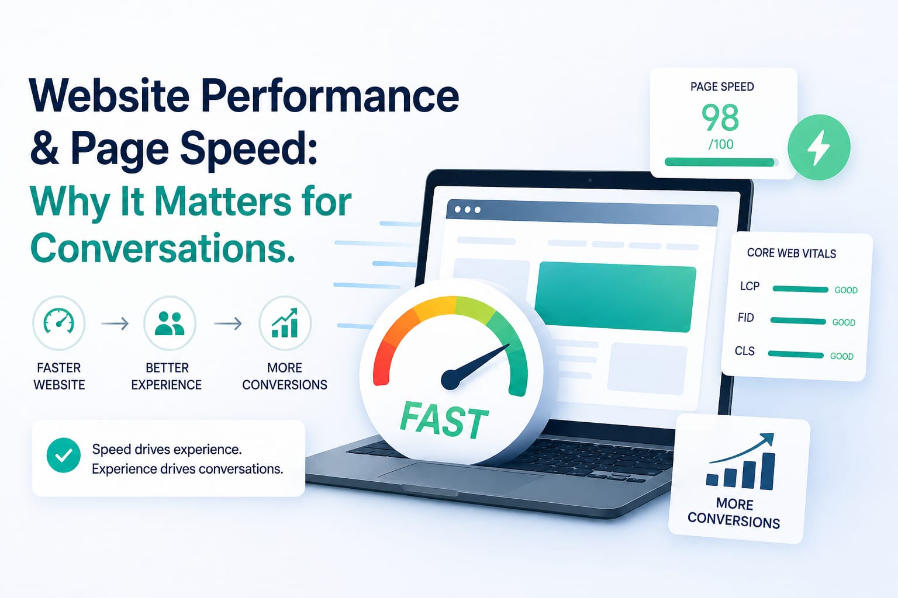

In the digital world, speed isn't just a technical feature—it's a psychological trigger. When a website loads instantly, it feels professional, reliable, and trustworthy. When it lags, users feel frustrated and quickly click away.
If your site is slow, you aren't just losing visitors; you are losing revenue. Here is why page speed is the ultimate conversion tool.
The "3-Second Rule"
Research shows that 40% of people will abandon a website that takes more than 3 seconds to load. In a world of fast fiber and 5G, patience is at an all-time low. If your "Contact Us" or "Buy Now" page takes too long, your customer is already looking at your competitor's site before yours even finishes loading.
Google Rewards the Fast
Google's mission is to give users the best possible experience. Because of this, they use "Page Speed" as a major ranking factor. A fast site at D-LABS gets a "speed boost" in search results, while slow sites get pushed to page two or three where no one can find them.
Mobile Performance is Key
In Kenya, the vast majority of your clients are using mobile data to browse your site. Mobile networks can be inconsistent. A site that is "heavy" with unoptimized images or messy code might work on a desktop, but it will crawl on a smartphone. We build sites that are "lightweight" so they fly even on basic mobile connections.
Trust and Brand Perception
A fast website sends a silent message: "We are professional, we are efficient, and we value your time." A slow, glitchy site sends the opposite message. Before a client even reads your first paragraph, they have already judged your business based on how fast your site responded.
How D-LABS Optimizes for Speed
- Image Compression: We ensure your high-quality photos don't weigh down your site.
- Clean Code: We remove unnecessary "bloat" that slows down browsers.
- Modern Hosting: Using platforms like Vercel ensures your site is served from a server closest to your user.
The Speed Challenge
Go to your current website on your phone right now. Count to three. If it's not fully loaded, you're losing customers. Let's fix that today.
Is your website slow? Click the WhatsApp button below and let's optimize your site for speed and conversions!